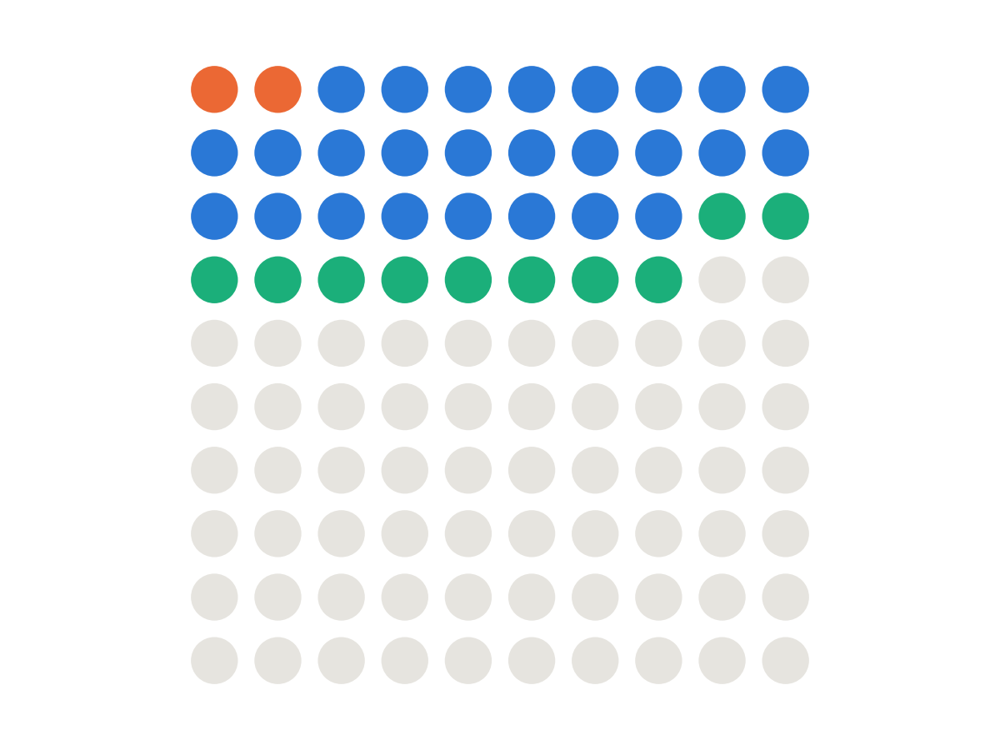
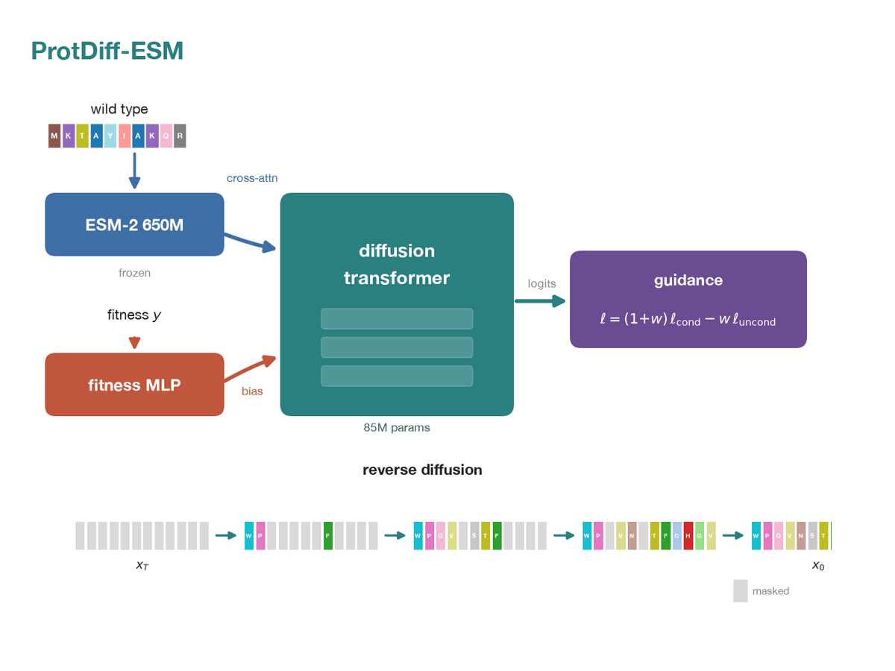
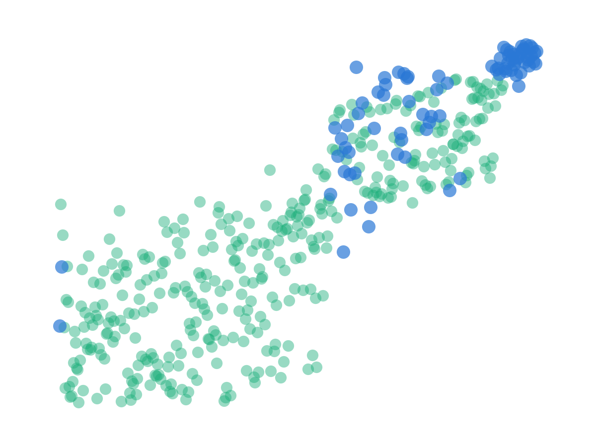
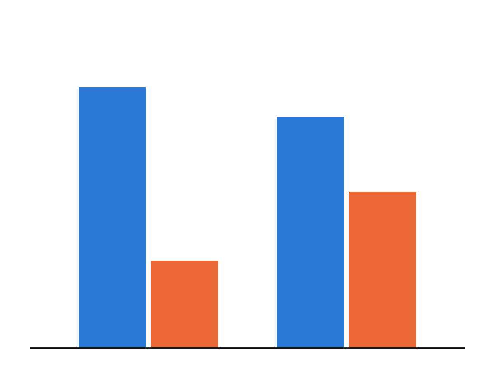
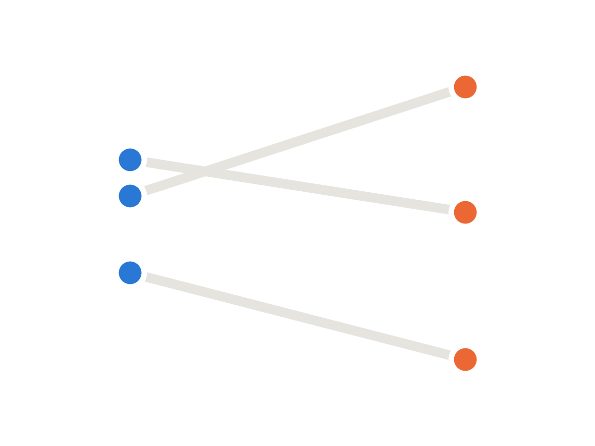
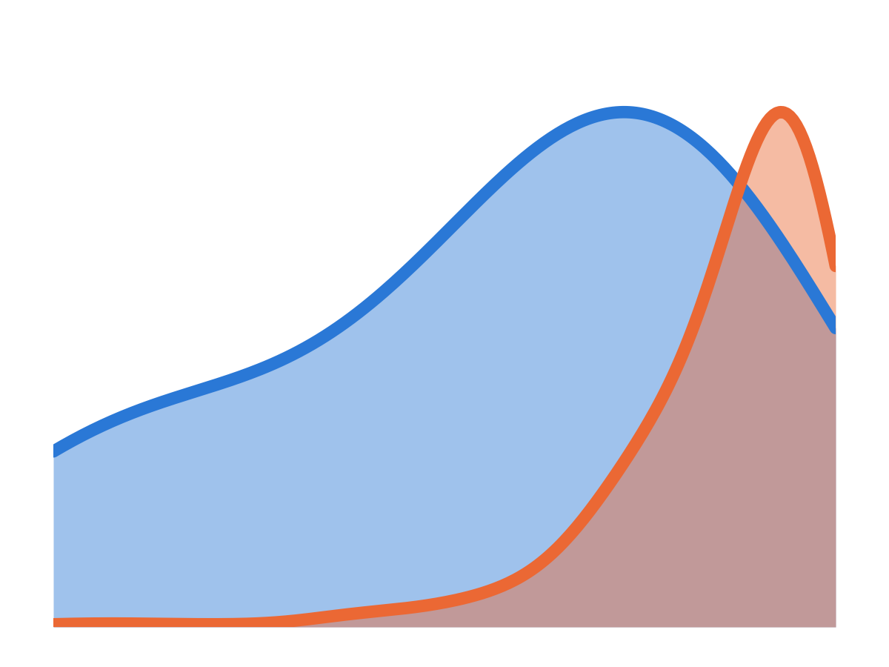
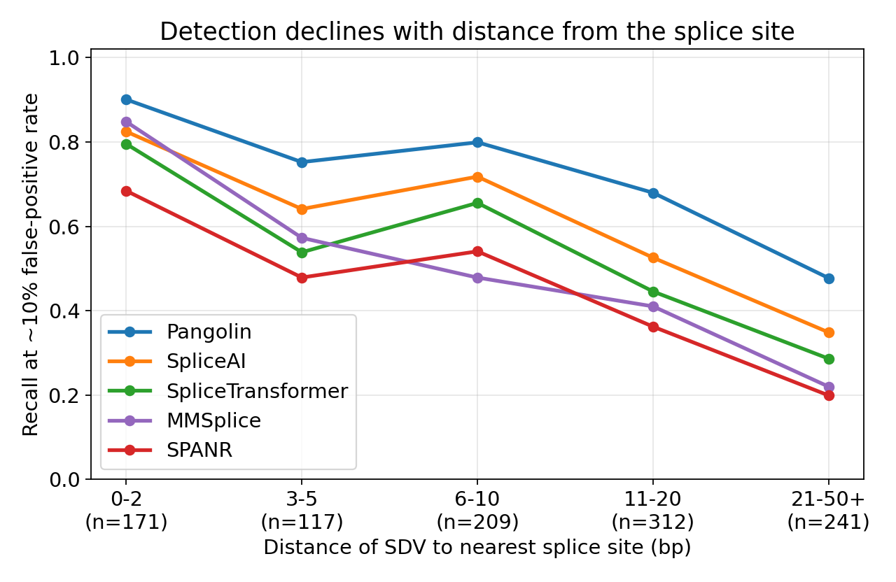

Brhanu Fentaw Znabu
Ph.D. student in Biomedical Engineering at the University of Nebraska–Lincoln,
advised by Nicole R. Sexton at the
Nebraska Center for Virology
and co-advised by Qiuming Yao in the
School of Computing.
I build and evaluate genomic foundation models for biological sequence analysis.
My current work focuses on domain-adaptive pre-training of large language models (DNABERT-2) for
viral host-range prediction and epidemic emergence forecasting, with an emphasis on
rigorous leakage-aware evaluation and model interpretability.
I am also exploring discrete diffusion models and conditional generative frameworks
for protein variant design, combining protein language model representations with fitness-guided generation.

Research
Genomic foundation models
I adapt pre-trained sequence models to viral genomes and ask what they have actually learned. ArboFM applies continued masked-language-model pre-training to DNABERT-2 over 120K+ windows from 9,299 arbovirus genomes, to predict epidemic emergence. A separate study asks a different question of 3,031 orthoflavivirus genomes, host range rather than emergence, and uses genome-localized attribution to trace the discriminative signal to the NS3–NS5 replication region and to UpA-containing motifs linked to dinucleotide-mediated host restriction.
Generative design over biological sequence
I build discrete-diffusion models that generate sequence under conditioning rather than scoring it. ProtDiff-ESM couples masked-diffusion sampling with ESM-2 fitness conditioning and classifier-free guidance for protein variants; EnhancerDiff re-points the same machinery from protein to regulatory DNA to design cell-type-specific 200 bp enhancers. Each is checked against something other than the objective it was trained on, and the answer is reported as it came out: EnhancerDiff's designs transfer to an independent oracle for two of three cell types, and ProtDiff-ESM does not beat ESM-2 at this model scale.
Evaluation that survives contact with reality
Most reported gains in biological machine learning are inflated by how the data was split or by scoring a model against the same oracle that selected it. I build benchmarks that measure the difference and report it whichever way it falls: phylogenetic leakage inflates viral host-range performance by 16 percentage points, a leakage-free split collapses antibody thermostability prediction from Spearman 0.24 to 0.08–0.14, two structure oracles agree on one binder target and not on another, and 19% of splice-disrupting variants are missed by every published predictor. Every tool named here ships as an open, reproducible package.
Software & Benchmarks

Dual-oracle audit for de novo binder design: does the score used to select generated binders survive an independent structure oracle? Across two targets, Boltz-2 and AlphaFold2 are uncorrelated on PD-L1 (r = 0.08, 100 designs from RFdiffusion3 → ProteinMPNN → Boltz-2) but strongly correlated on EGFR (r = 0.64), so oracle concordance is target-dependent, not a fixed property. On EGFR, where 55 of 402 designs have measured binding, gating on concordance lowers binder enrichment rather than raising it.

Discrete-diffusion protein language model with ESM-2 conditioning and classifier-free guidance. Full training and evaluation pipeline with a leakage-aware ProteinGym harness whose ESM-2 baseline reproduces the public leaderboard (Pearson r = 0.973). An honest negative result at this scale: the model does not beat ESM-2 at variant-effect prediction, held-out zero-shot correlation is near zero, and generated sequences fold no better than random (mean ESMFold pLDDT 38.8, against 33.3 for random and 59.1 for natural).
Discrete-diffusion generator for cell-type-specific regulatory DNA. Learns p(DNA | cell type) over 200 bp sequences with measured activity from the Gosai 2024 MPRA, then samples novel enhancers for a chosen cell type (K562, HepG2, SK-N-SH) under classifier-free guidance. Designs are scored by the real Malinois and Enformer oracles and checked for novelty rather than assumed correct. The independence audit localizes where the model games its target: the K562 and HepG2 galleries sit within noise of zero, while SK-N-SH does not. Re-points the diffusion machinery from ProtDiff-ESM from protein to DNA; generated design galleries and their oracle evaluations are committed, so the outputs are inspectable without retraining.

Oracle-independence and novelty audit for generative DNA design with Proto (Hie lab, Arc Institute): tests whether sequences optimized against one in-silico oracle survive an independent oracle and remain genuinely novel. Across two independent oracles (Malinois, Enformer; agreement ρ = 0.865), 93% of gradient-optimized designs transfer to the held-out oracle, finding no evidence of oracle-hacking.
Reproducible benchmark harness scoring five splicing variant-effect predictors against the MFASS experimental assay (27,733 variants), with distance-to-splice-site stratification and a calibrated consensus baseline. Every headline number regenerates from the committed data with one script, no GPU or large download required. Pangolin ranks first on both AUROC (0.888) and average precision (0.421); see the preprint for the shared exon-interior blind spot.

Leakage-aware benchmark for antibody thermostability (Tm) prediction built on public data, with grouped splits that prevent near-duplicate sequences from leaking between train and test. On Jain 2017 (n = 137 clinical antibodies), a leakage-free split collapses accuracy from Spearman 0.24 to 0.08–0.14, exposing how clonal-sequence leakage inflates standard benchmarks.

Leakage-aware benchmark for single-cell perturbation-response prediction, quantifying how much measured performance depends on the train/test split design. On the Norman dataset the conditional VAE beats a mean-of-training baseline only on the combinatorial split, predicting unseen double perturbations at ΔPearson 0.748 versus 0.551 (131 held-out combinations). Under random and function-grouped splits the baseline wins (0.522 versus 0.616, and 0.257 versus 0.412), which is the point of the benchmark.

Open benchmark and sequence-based triage model for native mass spectrometry suitability. The production model reaches cluster-aware ROC-AUC 0.835 ± 0.029 (n = 635) under homology-controlled cross-validation, and is shipped as a live web tool, a PyPI SDK, and a command-line interface.
Publications


Five published splicing variant-effect predictors benchmarked against 27,733 variants with measured exon-inclusion outcomes. Pangolin ranks first (AUROC 0.888, AP 0.421) and a calibrated consensus gives no meaningful gain. Recall declines sharply in the exon interior for every tool, including the one model not built around splice-site recognition, leaving 19% of disrupting variants undetected by all five.


ArboFM: domain-adapted DNABERT-2 via continued MLM pre-training on 120K+ arbovirus genome windows (9,299 genomes, 362 species, 6 families). Predicts epidemic emergence with AP = 0.978 (Flaviviridae). Retrospective temporal validation detects Zika, chikungunya, and West Nile epidemic lineages before documented emergence. Code released on publication.

DNABERT-2 embeddings, k-mer TF-IDF, and composition features on 3,031 orthoflavivirus genomes. Quantifies a 16-percentage-point performance inflation from phylogenetic leakage across all three representations. Genome-localized attribution concentrates discriminative signal in the NS3–NS5 replication region (65% of arbovirus genomes) and identifies UpA-containing motifs linked to dinucleotide-mediated host restriction. An automated checker confirms all 21 headline values reproduce from the committed inputs.
Experience
News
Earlier: HCC multi-omics preprint (Apr 2026) · symposium posters at UNL and the Nebraska Center for Virology (Feb 2026, Oct 2025) · Scientific Reports paper on MoSeq behavioral profiling (Apr 2025) · joined the Sexton Lab (Aug 2024).
About
My research sits at the intersection of machine learning and genomics. I develop foundation models and rigorous evaluation frameworks for biological sequence analysis, with applications in viral emergence prediction, host-range classification, and model interpretability. My work increasingly spans generative modeling, where I apply discrete diffusion and classifier-free guidance techniques to design protein variants with targeted functional properties. I work primarily with PyTorch, Hugging Face Transformers, and the SciPy/PyData ecosystem on HPC GPU clusters.
Prior to my PhD, I earned an M.Sc. in Biomedical Science and Engineering from Gwangju Institute of Science and Technology (GIST), South Korea, where I applied unsupervised machine learning (autoregressive models, Hidden Markov models) to 3D behavioral phenotyping in diabetic neuropathy mouse models. I also hold a B.Sc. in Biomedical Engineering from Jimma University, Ethiopia, graduating in the top 2% of my Biomedical Engineering class.
When I'm not at the computer, you'll find me exploring coffee shops ☕ or at the gym 🏋.